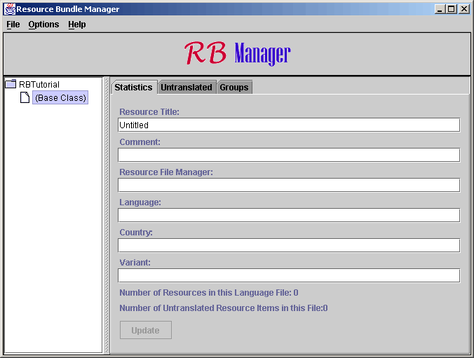

| General |
 |
| RB Manager |
|
| RB Reporter |
|
|
Step 2. Creating a New Resource Bundle
Things to Consider
A resource bundle in terms of this application is a group of property
files with the same base class name. For instance, the resource bundle
for RB Manager includes files: RBManager.properties, RBManager_de.properties,
RBManger_fi.properties, etc. In future versions of the program,
RB Manager will be extended to support importing and exporting data from
other language translations schemas such as the XML internationalization
standard, TMX.
You can have as many Resource Bundles as you like for an application, though most teams choose to work with just one. RB Manager allows you to work on one resource bundle at a time, editing either individual translation files or groups of translation files within the bundle. When you create a resource bundle you will be creating the base class translation file for that bundle. Other files can be added at any time later. The base class translation file provides a default translation in case locales are not specified or a resource translation file does not exist for the locale that is specified.
You will have to choose a base class name for the resource bundle. That name may have no white spaces and no underscores, and it should remind you in some way of the project or function to which it is attached. You will also have to enter a name for the person or people in charge of managing the resource bundle.
Creating the Resource Bundle
From the File menu, select 'New Resource Bundle...' You will be prompted to enter the base class name. If you enter a properly formatted name, the tree display on the lower left will change to reflect the name you entered. Click on the name of your resource bundle, and make sure the 'Statistics' tab is selected. You should see something like the following:

The only resource file you have is that of the base class. Select the '(Base Class)' node of the tree by clicking on it. You should now see the following:

The fields represented here have no bearing on how the translations will work in your application, but give RBManager some metadata to better organize the file. Resource Title should be a short title that represents this file, such as 'RBTutorial Base Class'. You can enter any comment and file manager value you like. The language, country, and variant fields provide a place for listing the full name of the language, country, and variant so that you do not have to rely on two or three letter encodings. You can also leave these fields blank if they are not relevant. Once you have entered these values in, finalize them by pressing the 'Update' button.